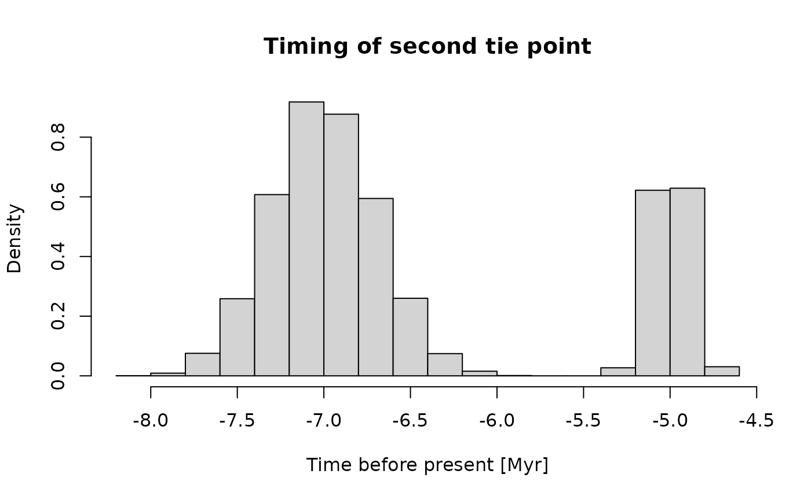

Estimating Age-Depth Models from Sedimentation Rates
Niklas Hohmann
Source:vignettes/adm_from_sedrate.Rmd
adm_from_sedrate.RmdIntroduction
This vignette explains how to estimate age-depth models (ADMs) from
sedimentation rates using the function
sedrate_to_multiadm
Inputs
The sedrate_to_multiadm function estimates age-depth
models from sedimentation rates and position and timing of tie points.
It takes the following inputs that encode user knowledge:
h_tp: a function encoding stratigraphic positions of tie pointst_tp: a function encoding times of the tie pointssed_rate_gen: a function encoding how sedimentation rates change with stratigraphic positions. This information can for example be derived from cyclostratigraphic analyses.
In addition, it takes the following inputs that specify the estimation procedure:
h: vector of heights where the ADM is determinedno_of_rep: integer, number of age-depth models determined
Coding user knowledge
Tie points
Times and heights of tie points are coded via the functions
t_tp (timing) and h_tp (height) that take no
inputs. They serve as wrappers around user-defined procedures that
reflect uncertainties around tie points. Every time t_tp
and h_tp are evaluated, they return possible values for the
tie points. Writing these functions requires some effort, but it allows
the user to hand over arbitrarily complex uncertainties of the tie
points to the sedrate_to_multiadm function.
The function for the timing of the tie points must return a named vector with names “t1” (timing of first tie point) and “t2” (timing of second tie point). “t1” must be smaller than “t2”.
For this example, I assume that the first tie point follows a normal
distribution with mean - 20 Myr before present and standard deviation
0.5 Myr. The timing of the second tie point is bimodal and given as an
equal mixture of two normal distributions with means - 5 and - 7 Myr
years before present and standard deviations of 0.1 and 0.3 Myr years.
This is implemented as follows in t_tp:
t_tp = function(){
# first tie point
t1 = rnorm(n = 1, mean = -20 , sd = 0.5)
# second tie point
d1 = rbinom(n = 1, size = 2, prob = 0.5) # fair coin flip for mixture
if (d1 == 0){
t2 = rnorm(n = 1, mean = - 5, sd = 0.1)
} else {
t2 = rnorm(n = 1, mean = - 7, sd = 0.3)
}
return(c("t1" = t1, "t2" = t2))
}Sampling from t_tp yields the following empirical
distribution for the tie points:
no_of_samples = 10000
# Evaluate timing of tie points
hist(x = sapply(seq_len(no_of_samples), function(x) t_tp()["t1"]),
freq = FALSE,
xlab = "Time before present [Myr]",
main = "Timing of first tie point")
hist(x = sapply(seq_len(no_of_samples), function(x) t_tp()["t2"]),
freq = FALSE,
xlab = "Time before present [Myr]",
main = "Timing of second tie point")
The function for the heights of the tie points must return a named
vector with entries h1 and h2, corresponding
to the heights of the first (lower) and second (upper) tie point.
h1 must be smaller than h2.
For this example, I assume the stratigraphic positions of the tie points is known without uncertainty, and are at 10 and 85 m stratigraphic height.
h_min = 10 # height of tie point 1
h_max = 85 # height of tie point 2h_tp is then implemented as follows:
When evaluated, this function returns the stratigraphic positions of the tie points:
#Evaluate stratigraphic positions of tie points
h_tp()
#> h1 h2
#> 10 85This is a lot of effort to simply encode fixed stratigraphic positions of tie points. However, it allows to implement arbitrary uncertainties on the position of the tie points if needed.
Coding Sedimentation Rates
Sedimentation rates are specified via a function
sed_rate_gen that takes no inputs. It serves as wrapper for
user-defined procedures that specify uncertainties in sedimentation
rates. sed_rate_gen is a “function factory”: every time it
is evaluated, it returns another function that is one potential
sedimentation rate scenario. Writing this function factory requires some
effort, but it allows the user to specify how uncertainties of
sedimentation rates are expressed in the section, and implement
arbitrarily complex distributions. The idea behind this is that
sedimentation rates are considered stochastic processes. Every time
sed_rate_gen is evaluated, it returns one sample path from
this process.
The functions returned by sed_rate_gen must return
strictly positive values - negative sedimentation rates can not be
observed in the section.
I use a simple sedimentation rate model, where only upper and lower bounds on sedimentation rates in the section are known. Between these limits, I assume a uniform distribution.
# limits on sed. rates
lower_limit = c(0.1,2,0.1,10)
upper_limit = c(0.2,3,2,12)
# strat intervals where sed rates are defined
s = c(h_min - 1, 30,75, 80, h_max + 1)Based on these parameters, the sedimentation rate function factory is defined as follows:
# define function factory
sed_rate_fun = function(){
# draw sed rates from uniform distribution
aa_1 = c(runif(1,lower_limit[1],upper_limit[1]),
runif(1, lower_limit[2],upper_limit[2]),
runif(1,lower_limit[3],upper_limit[3]),
runif(1, lower_limit[4], upper_limit[4]))
aa = c(aa_1, aa_1[4])
# define sed rate "realization" based on samples from uniform distribution
sed_rate_fun = approxfun(x = s,
y = aa,
method = "constant")
# return the function
return(sed_rate_fun)
}To visualize, here are three sedimentation rates generated by the
“sedimentation rate function factory” sed_rate_fun:
plot(NULL,
xlim = c(h_min, h_max),
ylim = c(0, max(upper_limit)),
xlab = "Stratigraphic Height [m]",
ylab = "Sedimentation Rate")
no_of_sedrates = 3 # no. of sed rates displayed
h = seq(h_min,h_max, by = 0.1) # strat. positions where sed rates are plotted
for (i in seq_len(no_of_sedrates)){
# generate sed rate from the factory
sed_rate_sample = sed_rate_fun()
# plot sed rate in the section
lines(h, sed_rate_sample(h))
}
All sedimentation rates generated by sed_rate_fun will
be different, because they are determined by random numbers.
Estimating the Age-Depth Models
The function sedrate_to_multiadm estimates the age-depth
model from the inputs. Here, I determine the age-depth models every
meter, and generate 10 ADMs
h = seq(h_min,h_max, by = 1) # strat. positions where ADMs are estimated
no_of_rep = 10 # no. of ADMs estimated
my_adm = sedrate_to_multiadm(h_tp = h_tp(),
t_tp = t_tp(),
sed_rate_gen = sed_rate_fun,
h = h,
no_of_rep = no_of_rep)It generates a portfolio of age-depth models combined into the
variable madm (multi-adm). madm is an object
of class multiadm.

These are 10 age-depth models generated by the
sedrate_to_adm function, which are all equally likely
candidates for the age-depth relationship in the section. Running
summary statistics on large number of age-depth models (increasing the
no_of_rep input variable) gives an assessment of the
uncertainties of the age-depth relationship. This can be used to
generate the classic envelopes of uncertainty (95 % CI).
Further information
For information on estimating age-depth models from tracer contents of rocks and sediments, see
vignette("adm_from_trace_cont")